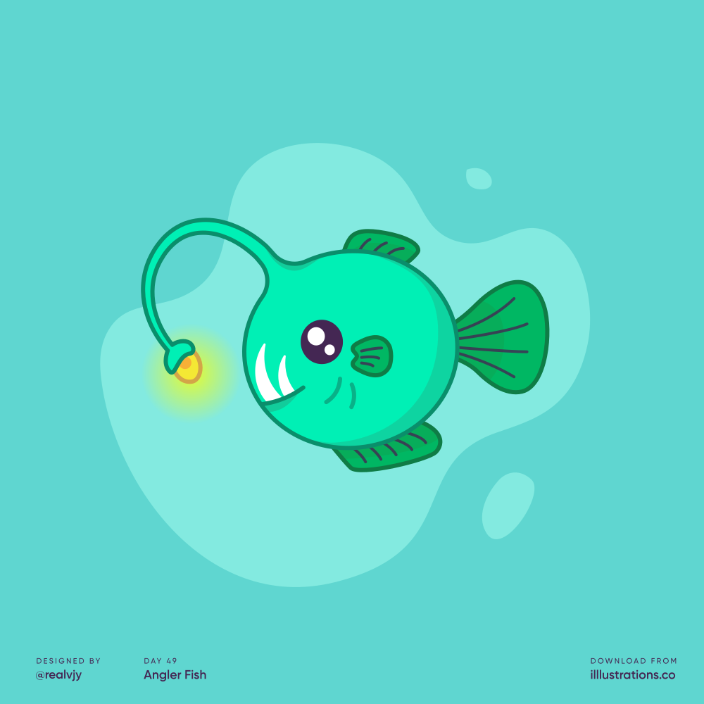

Los cambios en las condiciones actuales de vida (como aumento de población, mayor necesidad de alimento, mayor gasto energético, etc.) han propiciado los grandes avances tecnológicos en la actualidad.
Haber hecho todo lo posible para resolver estas necesidades trajo inconscientemente otro tipo de inconvenientes: problemas ambientales.
La gran mayoría de nuestras actividades habituales diarias generan contaminación, cuyo receptor final es el medio ambiente. ¿Cuánta y qué tipo de contaminación generarán las empresas?
Tipos de impacto ambiental
Antes de observar las cantidades en números, es necesario primero ver los datos cualitativos. Hay muchos tipos de contaminación que las empresas en mecatrónica hacen actualmente.Desertificación de suelos
Disminuye y finalmente desaparece la vegetación en las zonas de tierras áridas y semiáridas.
Cambio climático y producción de niebla en ciudades
Estrés por el intenso calor, precipitaciones extremas, inundaciones, deslizamientos de tierras, contaminación atmosférica y falta de agua.
Afectación a la biodiversidad
Causando una disminución en la variablidad genética.
